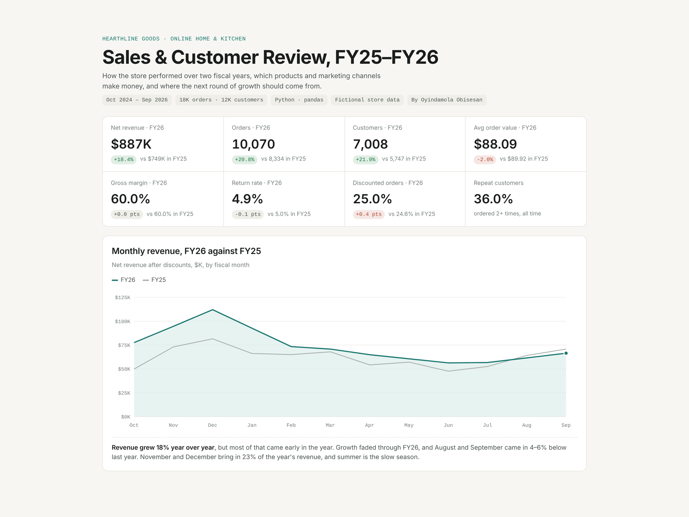

E-commerce Sales & Customer Review
Two-year review of an online home goods store: 18,000 orders and 12,000 customers.
- Found that the largest ad channel brought customers worth 40% less
- Identified repeat buyers holding 26% of revenue for a win-back campaign
- Showed 25% discounts cut margin by 13 points without improving loyalty